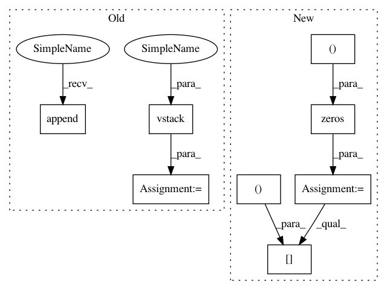

84dd314904ba2004ab35bbea65c5f2cb684e073c,autosklearn/estimators.py,AutoSklearnClassifier,predict,#AutoSklearnClassifier#Any#,273
Before Change
for k in six.moves.range(self._n_outputs):
output_predicted_indexes = predicted_indexes[:, k]
output_predicted_classes = self._classes[k].take(output_predicted_indexes)
predicted_classes.append(output_predicted_classes)
prediction = np.vstack(predicted_classes)
if self._n_outputs > 1:
prediction = prediction.transpose()
else:
prediction = prediction.flatten()
return prediction
def predict_proba(self, X):
After Change
return predicted_classes
else:
n_samples = predicted_indexes.shape[0]
predicted_classes = np.zeros((n_samples, self._n_outputs), dtype=object)
for k in six.moves.range(self._n_outputs):
output_predicted_indexes = predicted_indexes[:, k]
predicted_classes[:, k] = self._classes[k].take(output_predicted_indexes)
return predicted_classes
In pattern: SUPERPATTERN
Frequency: 3
Non-data size: 8
Instances
Project Name: automl/auto-sklearn
Commit Name: 84dd314904ba2004ab35bbea65c5f2cb684e073c
Time: 2016-02-24
Author: a.domashnev@gmail.com
File Name: autosklearn/estimators.py
Class Name: AutoSklearnClassifier
Method Name: predict
Project Name: automl/auto-sklearn
Commit Name: 84dd314904ba2004ab35bbea65c5f2cb684e073c
Time: 2016-02-24
Author: a.domashnev@gmail.com
File Name: autosklearn/estimators.py
Class Name: AutoSklearnClassifier
Method Name: predict
Project Name: PyMVPA/PyMVPA
Commit Name: 0759978553262a92a5eb6e7565e81b5bcb9a61f9
Time: 2008-03-10
Author: psederberg@gmail.com
File Name: mvpa/misc/signal.py
Class Name:
Method Name: __detrend_regress
Project Name: calico/basenji
Commit Name: a81022ad75c4d35a928a19aad31df8829c3bc966
Time: 2016-11-22
Author: drk@calicolabs.com
File Name: basenji/rnn.py
Class Name: RNN
Method Name: predict